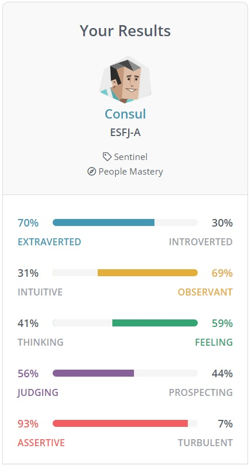
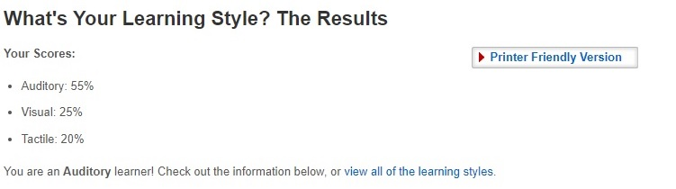
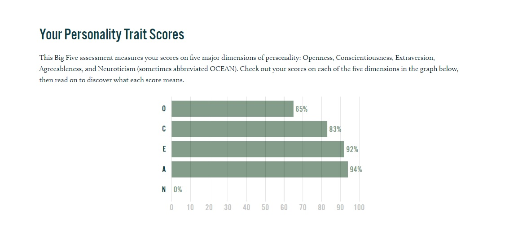
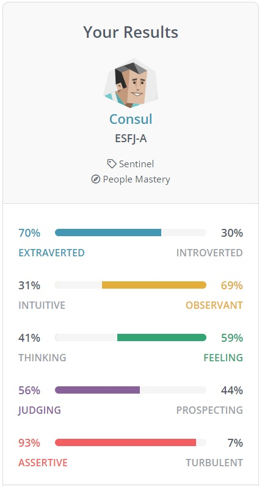
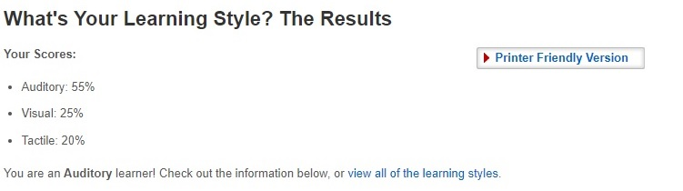
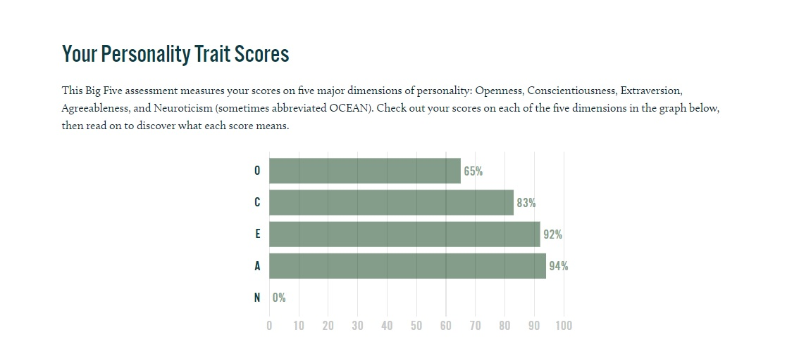

Profile
What my test results mean to me
The results of my test are that i am Consul and ESFJ-A type. I've completed some reading (I've done one of these befor in my career), and have gotten a versy similar score. Here are what it this means to me.
How do you think these results may influence your behaviour in a team?
How should you take this into account when forming a team?
Myers Briggs Test

Learning Styles

Big 5

The results of my test are that i am Consul and ESFJ-A type. I've completed some reading (I've done one of these befor in my career), and have gotten a versy similar score. Here are what it this means to me.
How do you think these results may influence your behaviour in a team?
How should you take this into account when forming a team?
Myers Briggs Test

Learning Styles

Big 5
